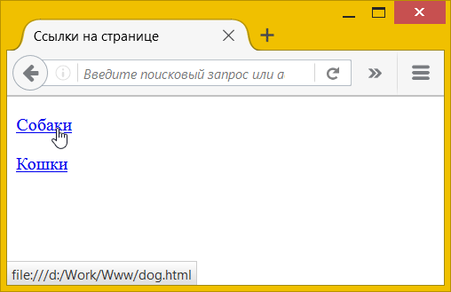
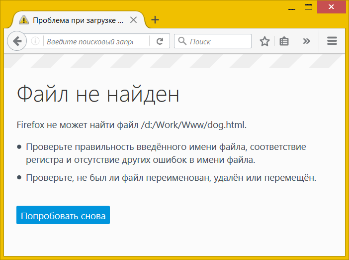
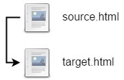
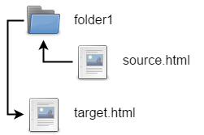
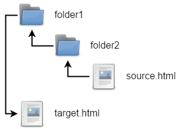
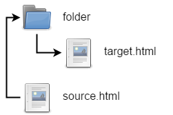
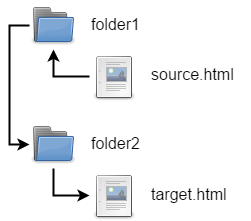

Ссылки являются основой гипертекстовых документов и позволяют переходить с одной веб-страницы на другую. Особенность ссылок состоит в том, что она может вести не только на HTML-документ, но и на документ любого типа, причём он может размещаться совсем на другом сайте. Главное, чтобы к документу, на который делается ссылка, был доступ. Иными словами, если путь к документу можно указать в адресной строке браузера, и документ при этом будет открыт, то на него можно сделать ссылку.
Для создания ссылки необходимо сообщить браузеру, что является ссылкой, а также указать адрес документа, на который следует сделать ссылку. Оба действия выполняются с помощью элемента <a>. Общий синтаксис создания ссылок следующий.
<a href="<адрес>">текст ссылки</a>Атрибут href определяет адрес документа, на который следует перейти, а содержимое элемента <a> является ссылкой. Текст, расположенный между тегами <a> и </a>, по умолчанию становится синего цвета и подчёркивается. В примере 1 показано создание нескольких ссылок на разные веб-страницы.
Пример 1. Добавление ссылок
<!DOCTYPE html>
<html>
<head>
<meta charset="utf-8">
<title>Ссылки на странице</title>
</head>
<body>
<p><a href="dog.html">Собаки</a></p>
<p><a href="cat.html">Кошки</a></p>
</body>
</html>В данном примере создаются две ссылки с разными текстами. При щелчке по тексту «Собаки» в окне браузера откроется документ dog.html, а при щелчке на «Кошки» — cat.html.
Результат примера показан на рис. 1. Обратите внимание, что при наведении курсора мыши на ссылку меняется вид курсора, а в строке состояния браузера отображается полный путь к документу.

Рис. 1. Вид ссылок на веб-странице
Если указана ссылка на документ, которого не существует, к примеру, его имя в атрибуте href набрано с ошибкой, то такая ссылка называется «битая». Битых ссылок следует избегать, поскольку они вводят посетителей сайта в заблуждение. Так, при щелчке по ссылке из примера 1 в браузере Firefox откроется не сам документ, а окно с предупреждением (рис. 2).

Рис. 2. Результат при открытии битой ссылки
Естественно, подобное сообщение будет различаться в браузерах, но смысл остаётся один — документ, на который ведёт ссылка, не может быть открыт. Чтобы не возникало подобных ошибок, тестируйте все ссылки на их работоспособность и сразу же устраняйте имеющиеся погрешности.
Абсолютные и относительные ссылки
Адрес ссылки может быть как абсолютным, так и относительным. Абсолютные адреса должны начинаться с указания протокола (http:// или https://) и содержать имя домена. Относительные ссылки ведут отсчёт от корня сайта или текущего документа.
Протокол для сайта можно не указывать, в таком случае ссылка будет начинаться сразу с // без протокола. Браузер сам подставит нужный протокол, на котором работает сайт. В примере 2 показано создание подобной ссылки.
Пример 2. Использование ссылки
<!DOCTYPE html>
<html>
<head>
<meta charset="utf-8">
<title>Абсолютный адрес</title>
</head>
<body>
<p><a href="//facebook.com">Facebook</a></p>
</body>
</html>В данном примере ссылка вида <a href="//facebook.com">Facebook</a> является абсолютной и ведёт на главную страницу Facebook. Учтите, что при открытии такой страницы в локальном документе произойдёт ошибка, поскольку такие ссылки работают только на веб-сервере.
Когда в адресе указывается только домен (//webref.ru) или после домена идёт имя папки (//webref.ru/css/), то веб-сервер автоматически загружает документ, обычно с именем index.html или index.php. Таким образом, полный путь к сайту будет https://webref.ru/index.php, а сокращённый — //webref.ru.
Абсолютные ссылки обычно применяются для указания на другой ресурс, впрочем, допустимо делать абсолютные ссылки и внутри текущего сайта. Однако подобное практикуется нечасто, поскольку такие ссылки достаточно длинные и громоздкие. Поэтому внутри сайта преимущественно используются относительные ссылки.
Ссылки относительно текущего документа
При создании относительных ссылок надо понимать, какое значение для атрибута href следует указывать, поскольку оно зависит от исходного расположения файлов. Рассмотрим несколько типичных вариантов.
1. Файлы располагаются в одной папке (рис. 3).

Рис. 3
Необходимо сделать ссылку из исходного документа source.html на target.html. В таком случае код будет следующий.
<a href="target.html">Ссылка</a>2. Файлы размещаются в разных папках (рис. 4).

Рис. 4
Когда исходный документ хранится в какой-либо папке, а ссылаемый в корне сайта, то перед именем документа в адресе ссылки следует поставить две точки и косую черту (/), как показано ниже.
<a href="../target.html">Ссылка</a>Две точки в данном случае означают выйти из текущей папки на уровень выше.
3. Файлы размещаются в разных папках (рис. 5).

Рис. 5
Теперь исходный файл находится в двух вложенных папках, и чтобы сослаться на документ в корне сайта, требуется повторить написание предыдущего примера два раза.
<a href="../../target.html">Ссылка</a>Аналогично обстоит дело с любым числом вложенных папок.
4. Файлы размещаются в разных папках (рис. 6).

Рис. 6
Теперь ситуация меняется, исходный файл располагается в корне сайта, а файл, на который необходимо сделать ссылку — в папке. В этом случае путь к файлу будет следующий.
<a href="folder/target.html">Ссылка</a>Заметьте, что никаких дополнительных точек перед именем папки нет. Если файл находится внутри не одной, а двух папок, то путь к нему записывается так.
<a href="folder1/folder2/target.html">Ссылка</a>5. Файлы размещаются в разных папках (рис. 7).

Рис. 7
Каждый файл располагается в своей папке и чтобы перейти из одной папки в другую ссылка будет следующей.
<a href="../folder2/target.html">Ссылка</a>Ссылки относительно корня сайта
Иногда можно встретить путь к файлу относительно корня сайта, он выглядит как "/folder/target.html". Так, запись <a href="/course/">Курсы</a> означает, что ссылка ведёт в папку с именем course, которая располагается в корне сайта, а в ней необходимо загрузить файл index.html.
Опять же, такая форма записи не работает на локальном компьютере, а только под управлением веб-сервера.
Виды ссылок
Любая ссылка на веб-странице может находиться в одном из следующих состояний.
Обычная ссылка
Такое состояние характеризуется для ссылок, которые ещё не открывали. По умолчанию обычные текстовые ссылки изображаются синим цветом и с подчёркиванием.
Посещённая ссылка
Как только пользователь открывает документ, на который ведёт ссылка, она помечается как посещённая и меняет свой цвет на фиолетовый, установленный по умолчанию.
Активная ссылка
Ссылка помечается как активная при щелчке по ней. Поскольку щелчок происходит достаточно быстро, подобное состояние ссылки весьма кратковременно. Цвет такой ссылки по умолчанию красный.
Атрибут target
Основной атрибут href элемента <a> мы уже освоили, рассмотрим полезный, но необязательный атрибут target.
При переходе по ссылке документ по умолчанию открывается в текущей вкладке браузера. При необходимости это условие может быть изменено атрибутом target. Синтаксис следующий.
<a target="_blank">Ссылка</a>Такая ссылка открывается в новой вкладке или окне браузера. Где именно откроется ссылка, зависит от настроек браузера и не может быть задано через HTML. Как правило, ссылки открываются в новой вкладке.
В примере 3 показано, как сделать, чтобы ссылка открывалась в новой, а не в текущей вкладке браузера.
Пример 3. Открытие ссылки в новой вкладке
<!DOCTYPE html>
<html>
<head>
<meta charset="utf-8">
<title>Ссылка в новой вкладке</title>
</head>
<body>
<p><a href="page/new.html" target="_blank">Открыть
в новой вкладке</a></p>
</body>
</html>Визуально ссылки с атрибутом target и без него никак не отличаются друг от друга, поэтому следует аккуратно использовать данный атрибут, чтобы не ввести пользователя в заблуждение.
Скачивание файла
Браузер самостоятельно определяет тип документа и открывает его, если может прочитать. К примеру, при переходе по ссылке к текстовому документу он откроется в браузере, а вот zip-архив браузер открыть не может, поэтому предложит пользователю скачать его на свой компьютер. Для HTML, PDF, текстовых документов, изображений, видеофайлов и т. д. такое поведение браузера можно изменить и заставить его не открывать файл по ссылке, а скачивать его. Для этого к ссылке достаточно добавить атрибут download, как показано в примере 4.
Пример 4. Атрибут download
<!DOCTYPE html>
<html>
<head>
<meta charset="utf-8">
<title>Скачать файл</title>
</head>
<body>
<p><a href="page/new.html">Посмотреть</a></p>
<p><a href="page/new.html" download>Скачать</a></p>
</body>
</html>При использовании атрибута download меняется поведение браузера, но вид самой ссылки остаётся прежним.
Другие ссылки
Мы рассмотрели ссылки на документы по протоколу HTTP или HTTPS, но кроме этого существуют и другие ссылки — на адрес электронной почты, номер телефона и др.
Ссылка на адрес электронной почты
Создание ссылки на адрес электронной почты делается почти также, как и ссылка на веб-страницу. Только вместо протокола http указывается mailto, после которого через двоеточие идёт сам адрес почты (пример 5).
Пример 5. Ссылка на адрес электронной почты
<!DOCTYPE html>
<html>
<head>
<meta charset="utf-8">
<title>Адрес электронной почты</title>
</head>
<body>
<p><a href="mailto:vlad@webref.ru">Задавайте вопросы по электронной почте</a></p>
</body>
</html>В атрибуте href элемента <a> вначале пишется ключевое слово mailto, затем через двоеточие желаемый почтовый адрес. Подобная ссылка по своему виду ничем не отличается от ссылки на веб-страницу, но при щелчке по ней запускается почтовая программа, установленная по умолчанию. Поэтому в названии ссылки желательно указывать, что она имеет отношение к электронной почте, чтобы читатели понимали, к чему приведёт щелчок по ней.
Можно также автоматически добавить тему сообщения, присоединив к адресу электронной почты через символ вопроса (?) параметр subject с темой сообщения, как показано в примере 6.
Пример 6. Задание темы сообщения
<!DOCTYPE html>
<html>
<head>
<meta charset="utf-8">
<title>Тема письма</title>
</head>
<body>
<p><a href="mailto:vlad@webref.ru?subject=Вопрос по HTML">Задавайте
вопросы по электронной почте</a></p>
</body>
</html>При запуске почтовой программы поле Тема (Subject) будет заполнено автоматически.
Ссылка на Skype
Для вызова программы Skype вы можете использовать протокол callto, после которого через двоеточие следует номер телефона или логин пользователя (пример 7).
Пример 7. Ссылка на Skype
<!DOCTYPE html>
<html>
<head>
<meta charset="utf-8">
<title>Skype</title>
</head>
<body>
<p><a href="callto:vlad">Мой Skype</a></p>
</body>
</html>Не все браузеры поддерживают такой формат ссылок.
Ссылка на телефон
На мобильных устройствах вы можете использовать протокол tel, который позволяет использовать ссылку для набора номера и вызова абонента. Номер следует указывать в международном формате, допустимо вставлять в номер дефис или писать его слитно (пример 8).
Пример 8. Ссылка на телефон
<!DOCTYPE html>
<html>
<head>
<meta charset="utf-8">
<title>Номер телефона</title>
</head>
<body>
<p><a href="tel:+1555-2368">Звоните нам</a></p>
</body>
</html>При щелчке по такой ссылке откроется приложение для телефона и начнётся вызов абонента.